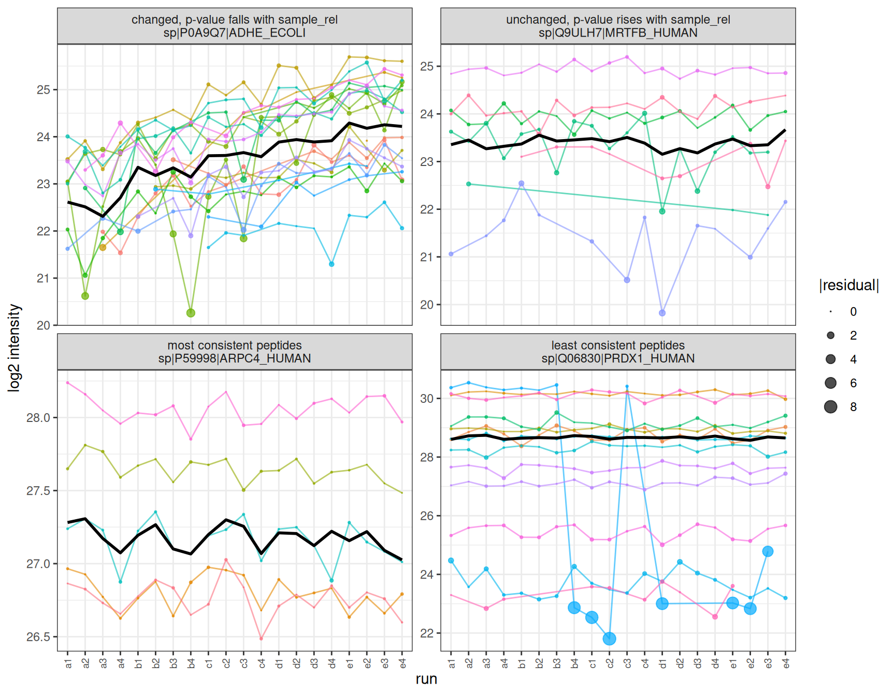
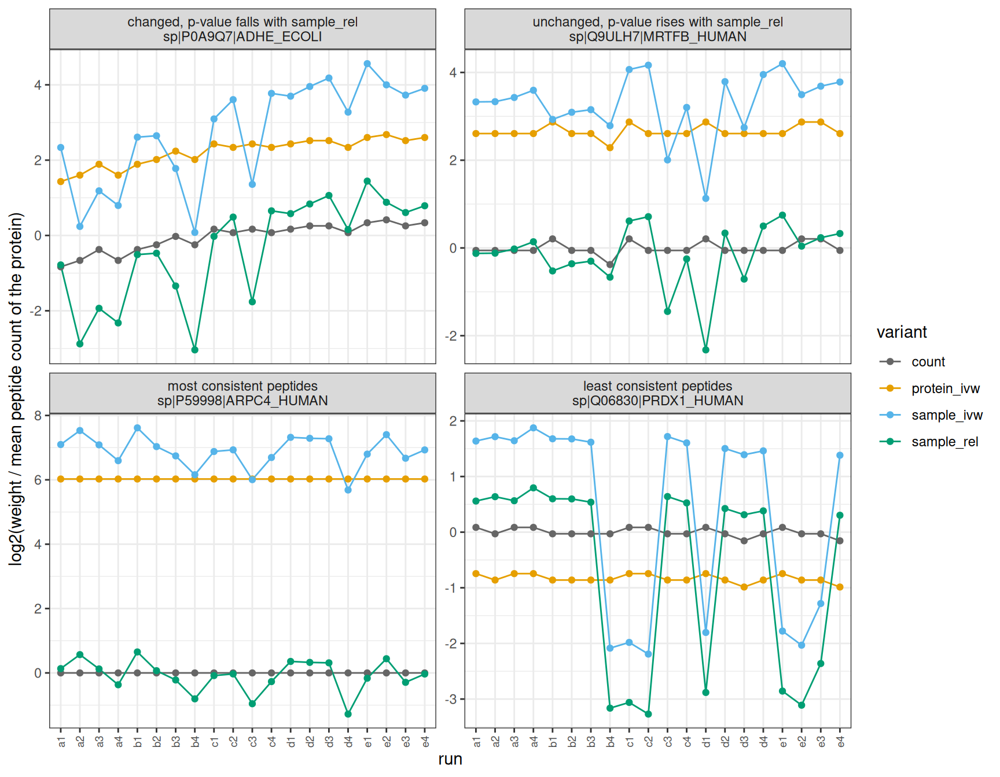
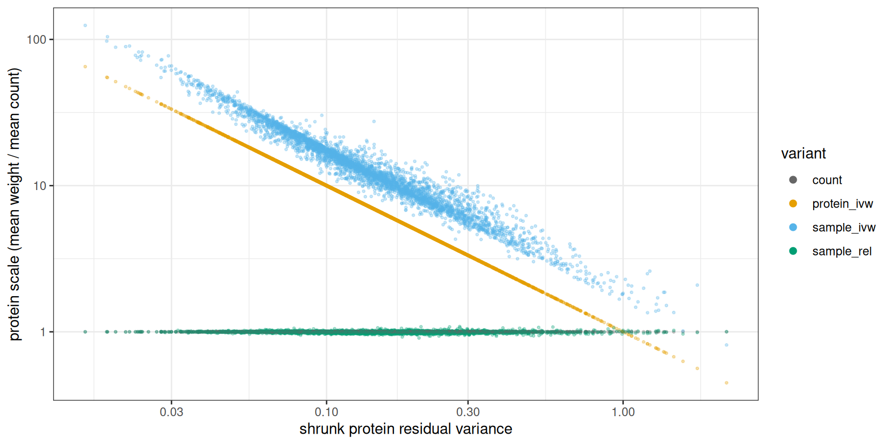
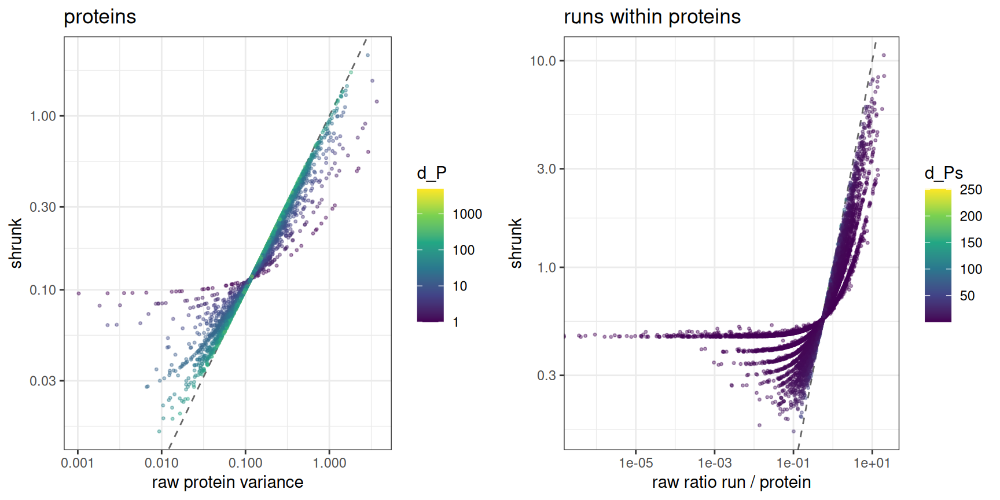
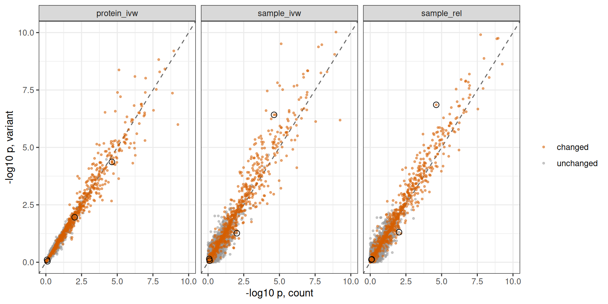
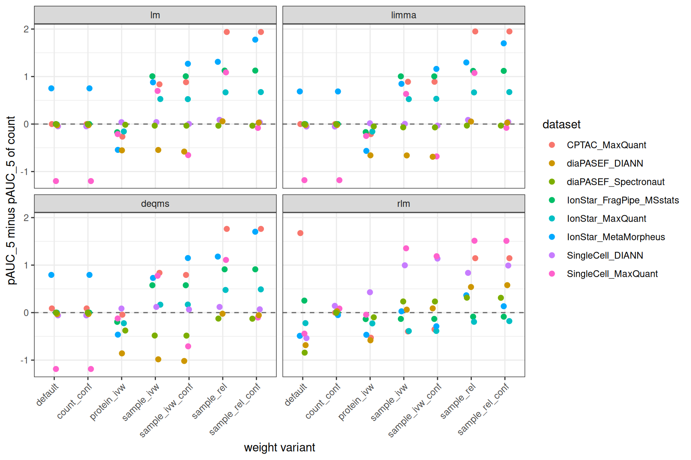
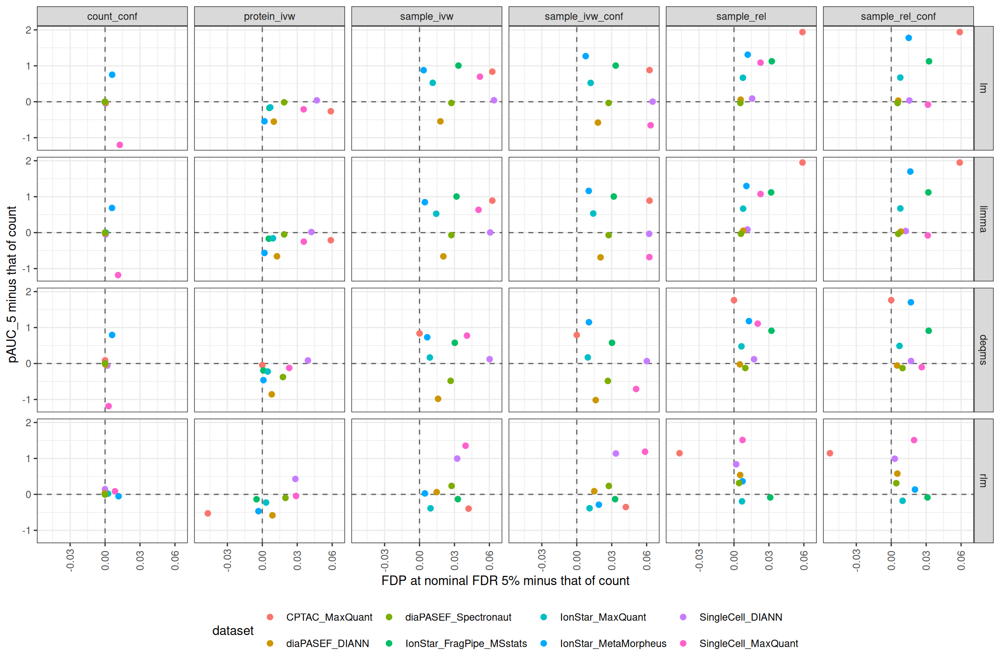

| dataset | proteins | protein d0 | protein s0² | protein × sample cells | cells with d > 0 | ratio d0 | ratio s0² | sd of log2 f within proteins |
|---|---|---|---|---|---|---|---|---|
| CPTAC_MaxQuant | 1470 | 5.718 | 0.164 | 7826 | 5519 | 7.518 | 0.708 | 0.219 |
| IonStar_FragPipe_MSstats | 5122 | 2.000 | 0.167 | 89864 | 64622 | 2.537 | 0.393 | 0.773 |
| IonStar_MaxQuant | 4777 | 4.521 | 0.116 | 87928 | 68341 | 4.200 | 0.565 | 0.576 |
| IonStar_MetaMorpheus | 9594 | 3.497 | 0.117 | 131690 | 88427 | 3.809 | 0.544 | 0.521 |
| SingleCell_DIANN | 8506 | 8.256 | 0.102 | 40417 | 31092 | 12.107 | 0.816 | 0.180 |
| SingleCell_MaxQuant | 5212 | 3.936 | 0.225 | 29495 | 22425 | 6.389 | 0.679 | 0.348 |
| diaPASEF_DIANN | 12242 | 5.933 | 0.063 | 61579 | 51667 | 7.675 | 0.747 | 0.365 |
| diaPASEF_Spectronaut | 12371 | 4.540 | 0.128 | 72746 | 64243 | 7.261 | 0.742 | 0.457 |
Peptide consistency weights
prolfqua’s protein-level models (lm, limma, DEqMS, rlm) weight each protein × sample abundance by the number of peptides it was aggregated from and by the identification confidence. This page derives a weight from how well the peptides of a protein agree with each other, the peptide consistency: the residuals of the median polish that aggregated them. It gives the maths and benchmarks the weights on the 8 benchmark datasets with peptides.
- Best:
sample_rel, which weights the samples of a protein by how consistent its peptides are in each sample, relative to the protein’s other samples - lm with
sample_relagainst the peptide count: pAUC_5 median 0.88, range -0.03 to 1.94 over the datasets; limma median 0.87 - Cost: the FDR is less conservative; the false discovery proportion at a nominal FDR of 5% rises by 0.014 (median, lm), at most 0.059
- One consistency value per protein (
protein_ivw) is slightly worse than the peptide count: median -0.19 (lm) - The analysis is the pipeline step
peptide_consistency(workflow/scripts/peptide_consistency_weights.R); the tables areinst/extdata/peptide_consistency_scores.tsvandpeptide_consistency_priors.tsv
Notation
- Protein \(P\), peptide \(i\), sample \(s\)
- \(y_{is}\): normalized log2 intensity of peptide \(i\) of protein \(P\) in sample \(s\) (the index \(P\) is left out where it is clear)
-
\(n_{Ps}\): peptides of \(P\) observed in \(s\), prolfqua’s
nr_children - \(c_{Ps}\): identification confidence of \(P\) in \(s\), the largest of its peptides’
- \(N_P = \sum_s n_{Ps}\) observations, \(I_P\) peptides and \(S_P\) samples of \(P\)
Median polish and its residuals
prolfqua aggregates the peptides of a protein with Tukey’s median polish (stats::medpolish, at most 10 iterations), which fits the additive model
\[ y_{is} = \mu + \alpha_i + \beta_s + r_{is} \]
by alternately subtracting row and column medians. The protein estimate in sample \(s\) is \(\hat\theta_{Ps} = \hat\mu + \hat\beta_s\); the peptide offsets \(\alpha_i\) absorb the differences in ionisation between peptides. The residual of peptide \(i\) in sample \(s\) is the intensity minus the fit,
\[ r_{is} = y_{is} - (\hat\mu + \hat\alpha_i + \hat\beta_s), \]
the part of the peptide not explained by the level of the protein in that sample plus the peptide’s offset. Example, one protein with 3 peptides in 4 samples, where peptide 3 is 2 log2 units too high in sample 3:
| \(y_{is}\) | s1 | s2 | s3 | s4 | \(r_{is}\) | s1 | s2 | s3 | s4 | |
|---|---|---|---|---|---|---|---|---|---|---|
| pep1 | 20 | 21 | 22 | 23 | pep1 | 0 | 0 | 0 | 0 | |
| pep2 | 18 | 19 | 20 | 21 | pep2 | 0 | 0 | 0 | 0 | |
| pep3 | 19 | 20 | 23 | 22 | pep3 | 0 | 0 | 2 | 0 |
- Fit: \(\hat\mu = 20.5\); peptide offsets \(\hat\alpha = (1, -1, 0)\); sample levels \(\hat\beta = (-1.5, -0.5, 0.5, 1.5)\); protein estimates \(\hat\mu + \hat\beta_s = (19, 20, 21, 22)\)
- The peptides move in parallel except peptide 3 in sample 3, so all residuals are 0 except \(r_{3,3} = 2\)
- Sum of squared residuals per sample: 0, 0, 4, 0; median polish keeps the outlier out of the estimate of sample 3 and out of the other residuals
- \(r_{is}\): what is left when the peptides do not move in parallel
- Consistent peptides: small residuals; peptides that correlate perfectly across samples have \(r_{is} = 0\)
- Residual variance, not correlation: a correlation divides by the spread across samples, so a protein that changes strongly between groups looks consistent even with noisy peptides, which would favour the change under test. The residual variance is in log2 units and does not depend on the size of the change
Variance of the protein estimate
If the residuals of \(P\) in sample \(s\) have variance \(\sigma^2_{Ps}\), the estimate from \(n_{Ps}\) peptides has
\[ \operatorname{Var}(\hat\theta_{Ps}) \approx \kappa \, \frac{\sigma^2_{Ps}}{n_{Ps}} \]
- \(\kappa\): efficiency of the median relative to the mean (\(\pi/2\) for normal residuals and many peptides); the same for every protein and sample, and a factor common to all weights changes no result
- Inverse-variance weight: \(w_{Ps} = n_{Ps} / \sigma^2_{Ps}\)
- The peptide count \(n_{Ps}\), prolfqua’s weight today, is this weight with the same \(\sigma^2\) for every protein and sample
Estimating the residual variances
The additive fit of protein \(P\) has \(1 + (I_P - 1) + (S_P - 1)\) parameters, which leaves the residual degrees of freedom and variance
\[ d_P = N_P - I_P - S_P + 1, \qquad s^2_P = \frac{1}{d_P} \sum_{i,s} r_{is}^2 . \]
The variance of one sample uses the residuals of that sample, \(\mathrm{RSS}_{Ps} = \sum_i r_{is}^2\), with the protein’s degrees of freedom split over its samples in proportion to \(n_{Ps} - 1\):
\[ d_{Ps} = (n_{Ps} - 1) \, \frac{d_P}{N_P - S_P}, \qquad s^2_{Ps} = \frac{\mathrm{RSS}_{Ps}}{d_{Ps}} . \]
- The split keeps the totals: \(\sum_s d_{Ps} = d_P\) and \(\sum_s d_{Ps} s^2_{Ps} = d_P s^2_P\)
- A sample with one peptide has \(d_{Ps} = 0\) and no variance of its own
- A protein with one peptide has \(d_P = 0\): its variances are the priors below, and its sample factors are all equal, so
sample_relgives it the peptide count - These are the degrees of freedom of least squares; median polish is not least squares, so they are approximate
Empirical Bayes shrinkage
With 2 to 5 peptides a variance rests on a few degrees of freedom. Both levels are shrunk as in limma (Smyth 2004, limma::squeezeVar()): given its true value, a sample variance is scaled \(\chi^2\), and the true values follow a scaled inverse \(\chi^2\) prior,
\[ s^2 \mid \sigma^2 \sim \sigma^2 \, \frac{\chi^2_d}{d}, \qquad \frac{1}{\sigma^2} \sim \frac{1}{d_0 s_0^2} \, \chi^2_{d_0}, \]
which gives the posterior variance
\[ \tilde s^2 = \frac{d_0 s_0^2 + d \, s^2}{d_0 + d} . \]
The prior degrees of freedom \(d_0\) and prior variance \(s_0^2\) come from the moments of \(z = \log s^2\) over all variances,
\[ \operatorname{E}(z) = \log s_0^2 + \psi(d/2) - \psi(d_0/2) + \log(d_0 / d), \qquad \operatorname{Var}(z) = \psi'(d/2) + \psi'(d_0/2), \]
with \(\psi\) and \(\psi'\) the digamma and trigamma functions. A variance with \(d = 0\) gets the prior, \(\tilde s^2 = s_0^2\).
Two levels, per dataset:
- Proteins: \(\tilde\sigma^2_P\), the shrunk \(s^2_P\) (degrees of freedom \(d_P\)) over all proteins
- Samples within proteins: the ratio \(v_{Ps} = s^2_{Ps} / \tilde\sigma^2_P\), shrunk over all protein × sample cells (degrees of freedom \(d_{Ps}\)) to \(\tilde v_{Ps}\). The ratio shrinks each sample’s variance towards its own protein’s, not towards one value for all proteins
The sample factor is \(f_{Ps} = 1 / \tilde v_{Ps}\), and the variance of a sample \(\tilde\sigma^2_{Ps} = \tilde\sigma^2_P \, \tilde v_{Ps}\).
Weight variants
Each variant is one weight column \(w_{Ps}\), passed to the facade as weights; the identification confidence enters only where the variant names it.
| variant | weight \(w_{Ps}\) | peptide consistency |
|---|---|---|
default |
the facade’s own: \(n_{Ps} c_{Ps}\) for lm, limma and deqms, \(c_{Ps}\) for rlm | none |
count |
\(n_{Ps}\) | none |
count_conf |
\(n_{Ps} \, c_{Ps}\) | none |
protein_ivw |
\(n_{Ps} / \tilde\sigma^2_P\) | one value per protein |
sample_ivw |
\(n_{Ps} / (\tilde\sigma^2_P \, \tilde v_{Ps})\) | one value per protein and sample |
sample_ivw_conf |
\(n_{Ps} \, c_{Ps} / (\tilde\sigma^2_P \, \tilde v_{Ps})\) | one value per protein and sample |
sample_rel |
\(n_{Ps} \, f_{Ps} / \bar f_P\) | per sample, relative to the protein’s other samples |
sample_rel_conf |
\(n_{Ps} \, c_{Ps} \, f_{Ps} / \bar f_P\) | per sample, relative to the protein’s other samples |
\(\bar f_P\) is the mean of \(f_{Ps}\) over the samples where \(P\) is observed, so the factor of sample_rel averages 1 within every protein. Example: a protein with 3 peptides in 4 samples, one peptide off by 2 log2 units in sample 3.
-
protein_ivw: \(\tilde\sigma^2_P\) rises, all 4 samples lose weight alike -
sample_ivw: sample 3 loses weight, and all 4 lose some through \(\tilde\sigma^2_P\) -
sample_rel: sample 3 gets a factor below 1, the other three slightly above 1
Why the protein-wide part matters
In a weighted least-squares fit of one protein, multiplying all its weights by \(k_P\) leaves the coefficients unchanged and multiplies the residual variance by \(k_P\), so the unmoderated \(t\) statistic does not change. The four facades, however, moderate the variance across proteins (limma’s empirical Bayes; lm and rlm with prolfqua’s variance moderation; DEqMS with a prior by peptide count):
\[ \tilde s^2_P = \frac{d_0 s_0^2 + d_P \, k_P s^2_P}{d_0 + d_P}, \]
with \(d_0\) and \(s_0^2\) estimated from all proteins. A protein-specific \(k_P\) changes where each protein’s variance stands against the prior and so changes its \(t\). protein_ivw and sample_ivw carry \(k_P = 1 / \tilde\sigma^2_P\), which divides each protein’s variance by its peptide noise; sample_rel keeps the weights of every protein on the scale of the peptide count and changes only how the protein’s samples are weighted against each other.
Illustration on IonStar MaxQuant
The dataset IonStar_MaxQuant (E. coli spiked into human at five dilutions, four runs each) shows how the variants differ. Four proteins with at least 4 peptides observed in every run are picked by rule: the E. coli protein whose p-value for the contrast dilution_(7.5/6)_1.25 falls most from count to sample_rel with lm, the human protein with p < 0.01 under count whose p-value rises most, and the proteins with the most and the least consistent peptides (smallest and largest \(\tilde\sigma^2_P\)).
Two properties tell the variants apart:
-
Shape: how the samples of one protein are weighted against each other.
countandprotein_ivwweight them by the peptide count \(n_{Ps}\);sample_ivwandsample_relby \(n_{Ps} f_{Ps}\), the count times the peptide consistency of the sample -
Scale: how the weights of one protein stand against those of other proteins.
countandsample_relkeep the scale of the peptide count;protein_ivwandsample_ivwmultiply it by \(1 / \tilde\sigma^2_P\)
| scale of the peptide count | scale \(1 / \tilde\sigma^2_P\) | |
|---|---|---|
| shape \(n_{Ps}\) | count |
protein_ivw |
| shape \(n_{Ps} f_{Ps}\) | sample_rel |
sample_ivw |
The shape changes the fit of each protein; the scale changes nothing in an unmoderated fit and acts only through the variance moderation across proteins.





| variant | changed, p < 0.01 | unchanged, p < 0.01 |
|---|---|---|
| count | 279 | 34 |
| protein_ivw | 280 | 35 |
| sample_ivw | 304 | 44 |
| sample_rel | 301 | 41 |
Calibration
The weights come from the same data as the fit, and the fit treats them as known. A sample whose peptides agree by chance gets more weight, and the residual degrees of freedom do not account for the estimated weights, so the variance of the contrast tends to be underestimated and the FDR to be anti-conservative. vooma and msqrob2’s robust weights share this.
Benchmark
- Datasets: the 8 datasets with peptides, prepared as in the main benchmark (vignette
Benchmark_results); the protein-table datasets have no peptides - The median polish is recomputed from the prepared peptides; it reproduces the prepared proteins exactly, and \(n_{Ps}\) their
nr_children - Facades lm, limma, deqms and rlm, each with every variant;
defaultreproduces the main benchmark - Scores: pAUC_5 of the signed p-value, all contrasts pooled (partial area under the ROC curve up to a false positive rate of 0.05, scale 0 to 100); the false discovery proportion (FDP) and the number of true discoveries (TP) at a nominal FDR of 5%, with the unchanged proteins as nulls
- prolfqua version: prolfqua 1.9.10
Ranking
| facade | default | count | count_conf | protein_ivw | sample_ivw | sample_ivw_conf | sample_rel | sample_rel_conf |
|---|---|---|---|---|---|---|---|---|
| lm | 78.8 | 79.4 | 78.8 | 79.1 | 79.8 | 79.1 | 80.0 | 79.4 |
| limma | 78.5 | 79.1 | 78.5 | 79.0 | 79.4 | 78.8 | 79.6 | 79.1 |
| deqms | 78.1 | 78.7 | 78.1 | 78.5 | 78.9 | 78.1 | 79.2 | 78.6 |
| rlm | 75.8 | 75.9 | 75.9 | 75.5 | 75.6 | 75.6 | 76.2 | 76.2 |

| facade | dataset | default | count | count_conf | protein_ivw | sample_ivw | sample_ivw_conf | sample_rel | sample_rel_conf |
|---|---|---|---|---|---|---|---|---|---|
| lm | CPTAC_MaxQuant | 81.8 | 81.8 | 81.8 | 81.6 | 82.7 | 82.7 | 83.8 | 83.8 |
| lm | IonStar_FragPipe_MSstats | 74.8 | 74.8 | 74.8 | 74.6 | 75.8 | 75.8 | 75.9 | 75.9 |
| lm | IonStar_MaxQuant | 64.0 | 64.0 | 64.0 | 63.9 | 64.6 | 64.6 | 64.7 | 64.7 |
| lm | IonStar_MetaMorpheus | 62.4 | 61.6 | 62.4 | 61.1 | 62.5 | 62.9 | 62.9 | 63.4 |
| lm | SingleCell_DIANN | 94.5 | 94.6 | 94.5 | 94.6 | 94.6 | 94.6 | 94.6 | 94.6 |
| lm | SingleCell_MaxQuant | 75.7 | 76.9 | 75.7 | 76.7 | 77.6 | 76.3 | 78.0 | 76.9 |
| lm | diaPASEF_DIANN | 91.8 | 91.8 | 91.8 | 91.3 | 91.3 | 91.3 | 91.9 | 91.9 |
| lm | diaPASEF_Spectronaut | 82.0 | 82.0 | 82.0 | 82.0 | 82.0 | 82.0 | 82.0 | 82.0 |
| limma | CPTAC_MaxQuant | 82.4 | 82.4 | 82.4 | 82.2 | 83.3 | 83.3 | 84.4 | 84.4 |
| limma | IonStar_FragPipe_MSstats | 74.5 | 74.5 | 74.5 | 74.3 | 75.5 | 75.5 | 75.6 | 75.6 |
| limma | IonStar_MaxQuant | 63.7 | 63.7 | 63.7 | 63.5 | 64.2 | 64.2 | 64.3 | 64.4 |
| limma | IonStar_MetaMorpheus | 62.0 | 61.4 | 62.0 | 60.8 | 62.2 | 62.5 | 62.7 | 63.1 |
| limma | SingleCell_DIANN | 94.1 | 94.1 | 94.1 | 94.1 | 94.1 | 94.1 | 94.2 | 94.2 |
| limma | SingleCell_MaxQuant | 74.9 | 76.1 | 74.9 | 75.9 | 76.8 | 75.4 | 77.2 | 76.0 |
| limma | diaPASEF_DIANN | 91.2 | 91.2 | 91.2 | 90.6 | 90.6 | 90.6 | 91.3 | 91.3 |
| limma | diaPASEF_Spectronaut | 82.1 | 82.1 | 82.1 | 82.0 | 82.0 | 82.0 | 82.1 | 82.1 |
| deqms | CPTAC_MaxQuant | 81.0 | 80.9 | 81.0 | 80.9 | 81.8 | 81.7 | 82.7 | 82.7 |
| deqms | IonStar_FragPipe_MSstats | 74.7 | 74.7 | 74.7 | 74.5 | 75.3 | 75.3 | 75.6 | 75.6 |
| deqms | IonStar_MaxQuant | 63.9 | 63.9 | 63.9 | 63.7 | 64.1 | 64.1 | 64.4 | 64.4 |
| deqms | IonStar_MetaMorpheus | 62.2 | 61.4 | 62.2 | 60.9 | 62.1 | 62.5 | 62.5 | 63.1 |
| deqms | SingleCell_DIANN | 93.9 | 93.9 | 93.9 | 94.0 | 94.0 | 94.0 | 94.0 | 94.0 |
| deqms | SingleCell_MaxQuant | 75.3 | 76.5 | 75.3 | 76.4 | 77.3 | 75.8 | 77.6 | 76.4 |
| deqms | diaPASEF_DIANN | 90.5 | 90.5 | 90.5 | 89.6 | 89.5 | 89.5 | 90.5 | 90.4 |
| deqms | diaPASEF_Spectronaut | 81.0 | 81.0 | 81.0 | 80.6 | 80.5 | 80.5 | 80.9 | 80.9 |
| rlm | CPTAC_MaxQuant | 80.0 | 78.3 | 78.3 | 77.8 | 77.9 | 77.9 | 79.4 | 79.4 |
| rlm | IonStar_FragPipe_MSstats | 73.7 | 73.4 | 73.4 | 73.3 | 73.3 | 73.3 | 73.4 | 73.4 |
| rlm | IonStar_MaxQuant | 62.7 | 63.0 | 63.0 | 62.7 | 62.6 | 62.6 | 62.8 | 62.8 |
| rlm | IonStar_MetaMorpheus | 59.3 | 59.8 | 59.8 | 59.3 | 59.8 | 59.5 | 60.2 | 59.9 |
| rlm | SingleCell_DIANN | 89.5 | 90.0 | 90.1 | 90.4 | 91.0 | 91.1 | 90.8 | 91.0 |
| rlm | SingleCell_MaxQuant | 70.7 | 71.1 | 71.2 | 71.1 | 72.5 | 72.3 | 72.7 | 72.7 |
| rlm | diaPASEF_DIANN | 87.8 | 88.5 | 88.5 | 87.9 | 88.5 | 88.5 | 89.0 | 89.0 |
| rlm | diaPASEF_Spectronaut | 78.0 | 78.8 | 78.8 | 78.7 | 79.1 | 79.1 | 79.1 | 79.1 |
Calibration and power

| facade | dataset | count | count_conf | protein_ivw | sample_ivw | sample_ivw_conf | sample_rel | sample_rel_conf |
|---|---|---|---|---|---|---|---|---|
| lm | CPTAC_MaxQuant | 0.000 (15) | 0.000 (15) | 0.059 (16) | 0.062 (15) | 0.062 (15) | 0.059 (16) | 0.059 (16) |
| lm | IonStar_FragPipe_MSstats | 0.038 (1495) | 0.038 (1495) | 0.044 (1496) | 0.071 (1600) | 0.071 (1600) | 0.070 (1597) | 0.070 (1597) |
| lm | IonStar_MaxQuant | 0.041 (1169) | 0.041 (1170) | 0.048 (1174) | 0.052 (1267) | 0.053 (1270) | 0.049 (1270) | 0.049 (1267) |
| lm | IonStar_MetaMorpheus | 0.043 (1550) | 0.049 (1581) | 0.045 (1526) | 0.047 (1652) | 0.051 (1679) | 0.055 (1701) | 0.058 (1730) |
| lm | SingleCell_DIANN | 0.350 (944) | 0.350 (944) | 0.397 (946) | 0.414 (952) | 0.415 (950) | 0.365 (948) | 0.365 (948) |
| lm | SingleCell_MaxQuant | 0.065 (650) | 0.077 (632) | 0.100 (655) | 0.117 (674) | 0.128 (653) | 0.088 (667) | 0.096 (657) |
| lm | diaPASEF_DIANN | 0.046 (2789) | 0.046 (2789) | 0.056 (2794) | 0.064 (2804) | 0.064 (2805) | 0.052 (2796) | 0.052 (2796) |
| lm | diaPASEF_Spectronaut | 0.054 (3446) | 0.054 (3446) | 0.073 (3489) | 0.081 (3520) | 0.081 (3520) | 0.059 (3491) | 0.059 (3491) |
| limma | CPTAC_MaxQuant | 0.000 (15) | 0.000 (15) | 0.059 (16) | 0.062 (15) | 0.062 (15) | 0.059 (16) | 0.059 (16) |
| limma | IonStar_FragPipe_MSstats | 0.038 (1494) | 0.038 (1494) | 0.044 (1494) | 0.070 (1600) | 0.070 (1600) | 0.070 (1597) | 0.070 (1597) |
| limma | IonStar_MaxQuant | 0.041 (1169) | 0.042 (1169) | 0.050 (1174) | 0.055 (1263) | 0.055 (1267) | 0.049 (1265) | 0.049 (1265) |
| limma | IonStar_MetaMorpheus | 0.045 (1549) | 0.051 (1583) | 0.047 (1525) | 0.050 (1648) | 0.055 (1674) | 0.056 (1696) | 0.061 (1727) |
| limma | SingleCell_DIANN | 0.343 (945) | 0.343 (945) | 0.385 (944) | 0.404 (949) | 0.405 (946) | 0.354 (949) | 0.355 (949) |
| limma | SingleCell_MaxQuant | 0.066 (651) | 0.077 (634) | 0.102 (654) | 0.117 (674) | 0.128 (652) | 0.089 (667) | 0.097 (658) |
| limma | diaPASEF_DIANN | 0.047 (2782) | 0.047 (2781) | 0.059 (2781) | 0.067 (2795) | 0.067 (2797) | 0.055 (2793) | 0.055 (2793) |
| limma | diaPASEF_Spectronaut | 0.054 (3446) | 0.054 (3446) | 0.072 (3488) | 0.081 (3521) | 0.081 (3521) | 0.060 (3491) | 0.060 (3489) |
| deqms | CPTAC_MaxQuant | 0.000 (16) | 0.000 (16) | 0.000 (14) | 0.000 (14) | 0.000 (14) | 0.000 (16) | 0.000 (15) |
| deqms | IonStar_FragPipe_MSstats | 0.037 (1468) | 0.037 (1468) | 0.038 (1456) | 0.067 (1559) | 0.067 (1559) | 0.069 (1567) | 0.069 (1567) |
| deqms | IonStar_MaxQuant | 0.036 (1156) | 0.036 (1156) | 0.041 (1137) | 0.045 (1239) | 0.045 (1242) | 0.042 (1246) | 0.043 (1247) |
| deqms | IonStar_MetaMorpheus | 0.045 (1539) | 0.051 (1572) | 0.046 (1525) | 0.051 (1646) | 0.055 (1679) | 0.058 (1687) | 0.062 (1722) |
| deqms | SingleCell_DIANN | 0.338 (927) | 0.340 (925) | 0.377 (922) | 0.398 (927) | 0.398 (927) | 0.355 (930) | 0.355 (929) |
| deqms | SingleCell_MaxQuant | 0.088 (631) | 0.091 (618) | 0.111 (623) | 0.129 (642) | 0.139 (625) | 0.109 (649) | 0.114 (643) |
| deqms | diaPASEF_DIANN | 0.045 (2728) | 0.045 (2727) | 0.053 (2722) | 0.061 (2737) | 0.061 (2736) | 0.050 (2743) | 0.050 (2742) |
| deqms | diaPASEF_Spectronaut | 0.073 (3376) | 0.073 (3376) | 0.090 (3366) | 0.099 (3412) | 0.099 (3413) | 0.082 (3415) | 0.082 (3415) |
| rlm | CPTAC_MaxQuant | 0.158 (16) | 0.158 (16) | 0.111 (16) | 0.200 (16) | 0.200 (16) | 0.111 (16) | 0.105 (17) |
| rlm | IonStar_FragPipe_MSstats | 0.117 (1667) | 0.117 (1667) | 0.112 (1663) | 0.150 (1718) | 0.150 (1718) | 0.148 (1731) | 0.148 (1731) |
| rlm | IonStar_MaxQuant | 0.097 (1285) | 0.100 (1285) | 0.100 (1257) | 0.106 (1335) | 0.108 (1338) | 0.104 (1355) | 0.107 (1356) |
| rlm | IonStar_MetaMorpheus | 0.116 (1700) | 0.128 (1730) | 0.113 (1670) | 0.121 (1779) | 0.135 (1788) | 0.124 (1819) | 0.137 (1836) |
| rlm | SingleCell_DIANN | 0.444 (932) | 0.444 (936) | 0.472 (934) | 0.476 (949) | 0.477 (952) | 0.446 (946) | 0.447 (949) |
| rlm | SingleCell_MaxQuant | 0.164 (664) | 0.172 (663) | 0.193 (666) | 0.203 (686) | 0.222 (682) | 0.171 (693) | 0.183 (686) |
| rlm | diaPASEF_DIANN | 0.095 (2774) | 0.095 (2774) | 0.104 (2776) | 0.110 (2801) | 0.110 (2801) | 0.100 (2800) | 0.100 (2801) |
| rlm | diaPASEF_Spectronaut | 0.091 (3469) | 0.091 (3469) | 0.111 (3506) | 0.119 (3541) | 0.119 (3541) | 0.096 (3513) | 0.096 (3513) |
Identification confidence
The confidence enters only the _conf variants. It changes the ranking only where it varies across the samples of a protein: in 6 of the 8 datasets it is 1, constant per peptide, or above the floor of 0.5, and sample_rel_conf equals sample_rel. Where it varies, it helps or hurts:
| dataset | count | count_conf | sample_rel | sample_rel_conf | conf on count | conf on sample_rel |
|---|---|---|---|---|---|---|
| SingleCell_MaxQuant | 76.94 | 75.74 | 78.03 | 76.86 | -1.20 | -1.17 |
| IonStar_MetaMorpheus | 61.61 | 62.36 | 62.92 | 63.39 | 0.75 | 0.47 |
| SingleCell_DIANN | 94.56 | 94.51 | 94.65 | 94.60 | -0.05 | -0.05 |
| diaPASEF_DIANN | 91.84 | 91.82 | 91.90 | 91.87 | -0.02 | -0.03 |
| IonStar_MaxQuant | 64.05 | 64.04 | 64.72 | 64.72 | -0.01 | 0.01 |
| diaPASEF_Spectronaut | 82.03 | 82.03 | 82.00 | 82.00 | 0.00 | 0.00 |
| CPTAC_MaxQuant | 81.82 | 81.82 | 83.75 | 83.75 | 0.00 | 0.00 |
| IonStar_FragPipe_MSstats | 74.80 | 74.80 | 75.93 | 75.93 | 0.00 | 0.00 |
- Helps: IonStar_MetaMorpheus
- Hurts: SingleCell_MaxQuant
- IonStar_MetaMorpheus carries 1 − PIP PEP of its match-between-runs peaks (MS/MS peaks 1), SingleCell_MaxQuant 1 − the MaxQuant evidence PEP; both floored at 0.5
- So
sample_rel_confis best where the confidence is informative andsample_relwhere it is not; in the median over the datasetssample_relleads
Conclusions
- The within-protein part of the peptide consistency (
sample_rel) ranks better than the peptide count for lm on 7 of 8 datasets, by up to 1.94; the largest loss is -0.03 - The protein-wide part (\(\tilde\sigma^2_P\)) does not help; through the variance moderation it costs a little ranking and calibration
- The identification confidence on top helps or hurts depending on the dataset (section Identification confidence); in the median
sample_rel_confgains 0.35 against 0.88 forsample_rel(lm) - Open: the higher FDP. Candidates are a tempered weight (\(f^{1/2}\)), stronger shrinkage, or a correction of the degrees of freedom for estimated weights; then the weight would move into prolfqua’s aggregation (TODO
TODO/prolfqua/TODO_aggregate_variance_weights.md)
Reference
Smyth GK (2004). Linear models and empirical Bayes methods for assessing differential expression in microarray experiments. Statistical Applications in Genetics and Molecular Biology 3(1), Article 3.